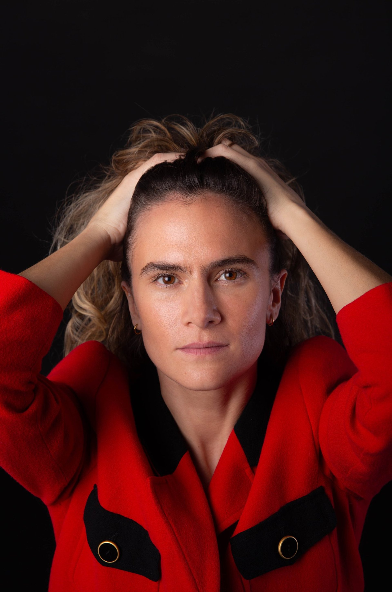
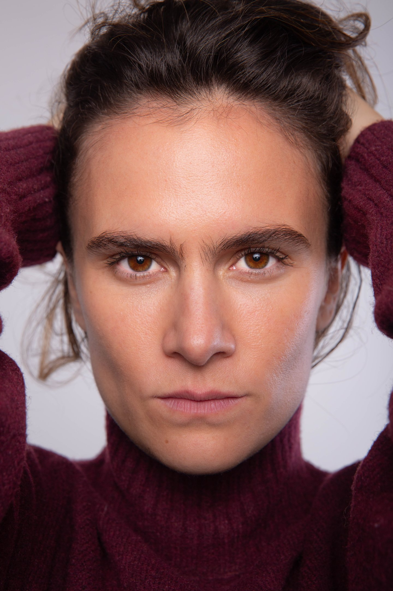

MARIOLADE LOPE

CINE &
TEATRO
Machos Alfa T42025
Serie · Dirección: Laura Caballero
Chica Radfem
Lecho de Pasto2027 · Próximamente
Largometraje · Dirección: Carmela Roman
Protagonista: Jane
Casa de muñecas2026
Teatro · Cristina Linde
Inocentes2025
Teatro · Dirección: Richard Holmes
Sofía
Tres hermanas2024
Teatro · Dirección: Juan Carlos Corazza
Masha
Pandora2024
Cortometraje · Dirección: Tobias Vergara
Kat
Con la ley2024
Cortometraje · Dirección: Richard Holmes
Laura
Más teatro2021–2023
2023 · El alma buena de Sechuan · Shuita · Dirección: Paula Soldevila
2022 · Terror y miseria en el III Reich · Dirección: Paula Soldevila
2021 · Lungs · Mujer · Dirección: Óscar Velado
Videobook
Ver en VimeoGALERÍA
Fotografías: @luciabarreiro_photo & @marioladelope
MARIOLA
DE LOPE

Actriz de cine,
televisión y teatro.
Formada en el Estudio Corazza entre 2020 y 2024, con formación complementaria con Manuel Morón y Lorena García Bayonas.
Inglés bilingüe y noruego básico. Canto, guitarra y danza urbana y flamenca.
Formación completa
2024–2025 · Seminarios profesionales con Manuel Morón.
2024 · Seminario profesional con Lorena García Bayonas.
2020–2024 · Formación de interpretación en el Estudio Corazza.
2022–2023 · Seminarios de voz con María Bigeriego.
2023 · Seminario de clown con Alain Vigneau.
Grado en Comercio · Universidad Complutense de Madrid y Universidad de Oslo.
Habilidades & perfil
Estatura: 1,67 m · Ojos: miel.
Golf (hándicap 10), esquí, wake, fútbol, pádel y esgrima a nivel avanzado.
Canto y guitarra. Danza urbana y flamenca.